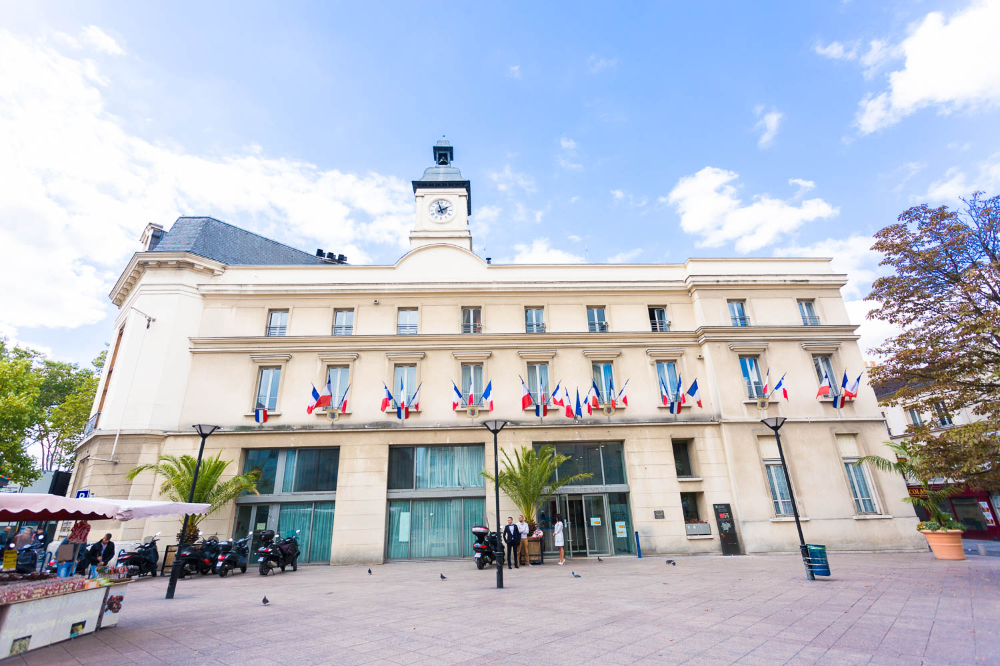
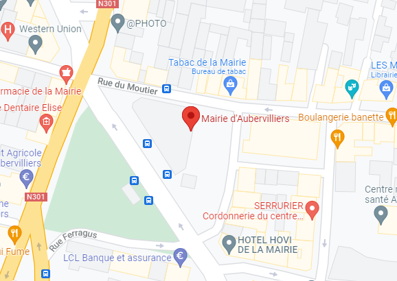
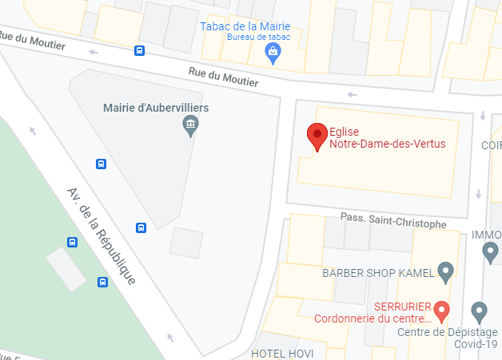
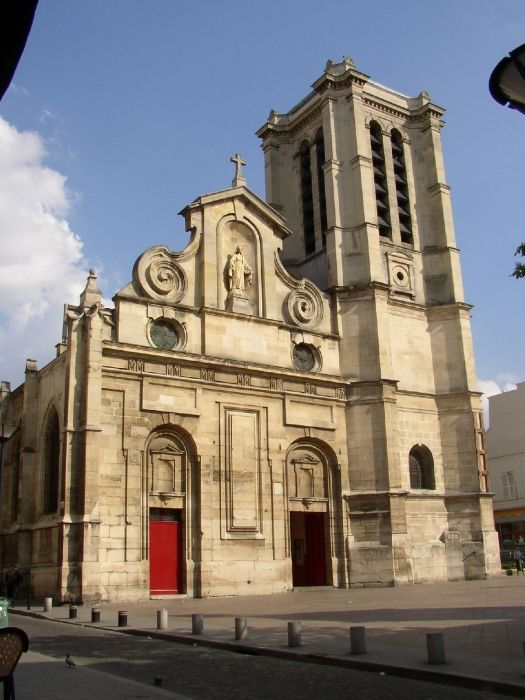
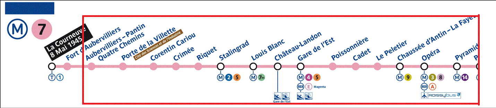
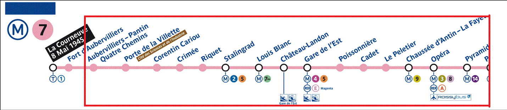
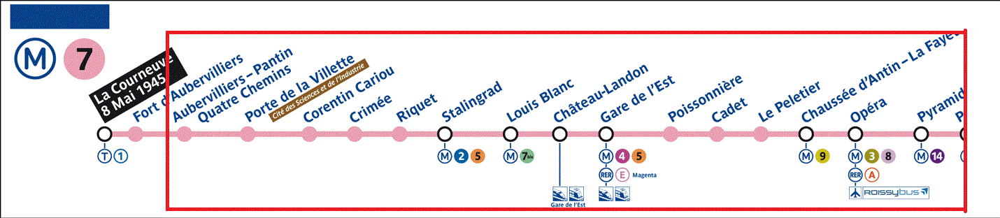

Rendez-vous le 20 février sur la place de la mairie d'Aubervilliers
à 14h00, début de la cérémonie à 14h30
Adresse: 2 Rue de la Commune de Paris, 93300 Aubervilliers


Photographie par Alexandre Mayeur, Image plan pris depuis Google Maps
La fête, le concert et le dîner
Après le mariage (vers 15h30), tout se déroulera à l'ancienne église de Notre-Dame-des-Vertus,
situé juste devant la mairie. Vous ne pouvez pas la rater !
Vous pouvez venir avec votre propre costume et des armes dans le thème ghotique,
mais les armes authentiques sont interdites.
Un costume vous sera fourni si vous n'en possédez pas.
Le concert de Type AB+ débutera à 16h.
Adresse: 1 Rue de la Commune de Paris, 93300 Aubervilliers


Instructions pour les invités venant de loin
Pour Axel qui vient de Finlande, rendez-vous le 17 février à 15h30 à l'aéroport Paris-Charles de Gaulle au Terminal 3.
Pour les invités venant de Perpignan en train, prenez-en un jusqu'à Gare de Lyon (Paris),
puis prenez le métro ligne 14 direction Mairie de Saint-Ouen jusqu'à Pyramides,
et enfin la ligne 7 direction La Courneuve 8-mai-1945 jusqu'à Aubervilliers-Pantin Quatre Chemins.
Il vous suffira ensuite de marcher jusqu'à la mairie d'Aubervilliers.

Vous pouvez consulter Google Maps pour plus d'informations sur le trajet, ou pour choisir votre propre itinéraire :
Hébergement
Si vous compter assister au mariage mais que vous venez de loin,
voici une sélection d'hôtels situés dans un rayon de 2km de la mairie :
Hôtel Le Cedre Saint Denis
Hôtel ibis Budget Paris Aubervilliers (2 étoiles, à 5 mins de la mairie)
Greet Hotel Paris Nord 18ème (2 étoiles)
Hôtel ibis Styles Paris Saint Denis Plaine (3 étoiles)
Hôtel ibis Saint-Denis Stade Sud (3 étoiles)
Residhome Paris Rosa Parks. (3 étoiles)
Novotel Suites (4 étoiles)
Si vous êtes les parents de Maria, une chambre 3 étoiles vous est déjà réservée par les mariés
à l'hôtel ibis Saint-Denis Stade Sud.
S'il vous est impossible de réserver un hôtel pour une raison spécifique,
faîtes en part dans le formulaire ou aux mariés afin de trouver une solution :
Préparation
A partir du 17 février - installation de la scène pour le concert
(dépôt instruments de musique et préparation de la scène)
18 ou 19 février 2022 - dates recommandées pour l'arrivée des invités venant de loin
A partir du 19 février - dressage des tables pour le dîner
 Le mariage de Kévin et Maria
Le mariage de Kévin et Maria

 
